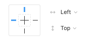
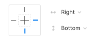
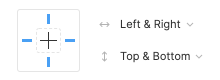
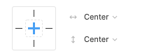

Constraints allow you to fix elements of your design to different sides of their parent Frame. This lets you build fluid layouts to support multiple device sizes and breakpoints within the same group.
Horizontal and vertical constraints can be set independently
Left and Top maintains the object’s position, relative to the left-side and top of the frame.
Right and Bottom maintains the object’s position, relative to the right-side and bottom of the frame.
Left & Right and Top & Bottom maintains the object’s size and position, relative to the left and right and top and bottom of the frame.
Center maintains the object’s position, relative to the horizontal and vertical center of the frame.
Scale maintains the object’s size and position as a percentage of the Frame’s dimensions.
You may want to resize an object, without applying any constraints. To ignore an object’s constraints, hold down the modifier key and resize the object.